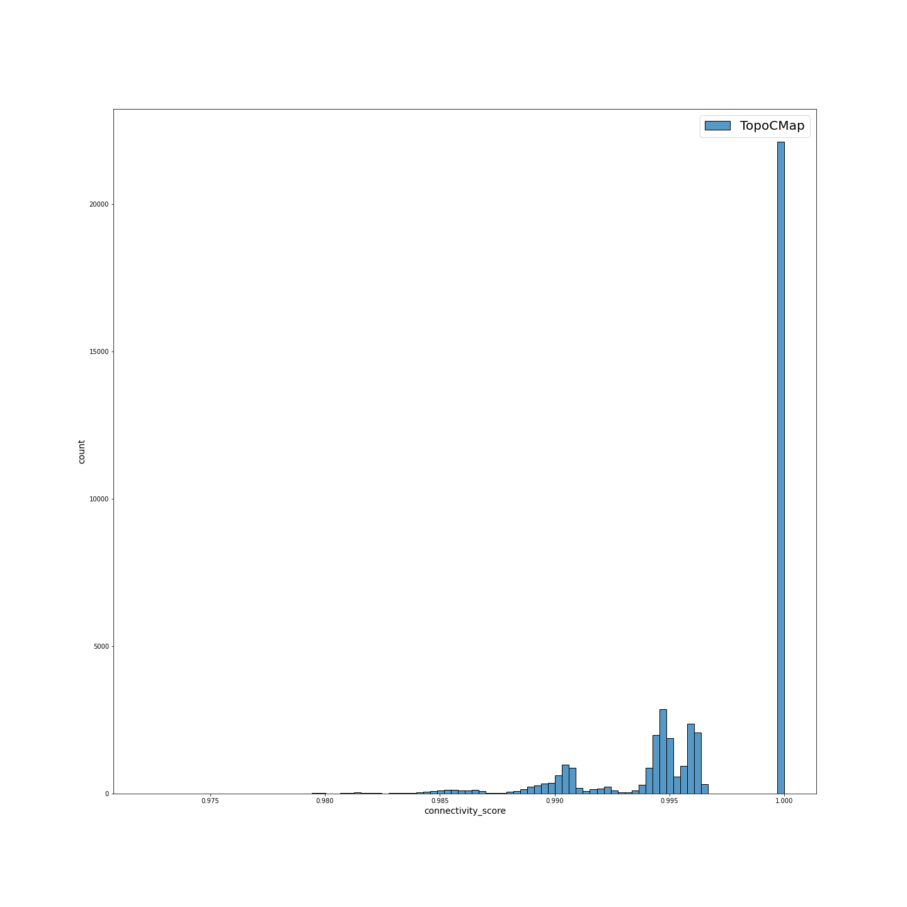
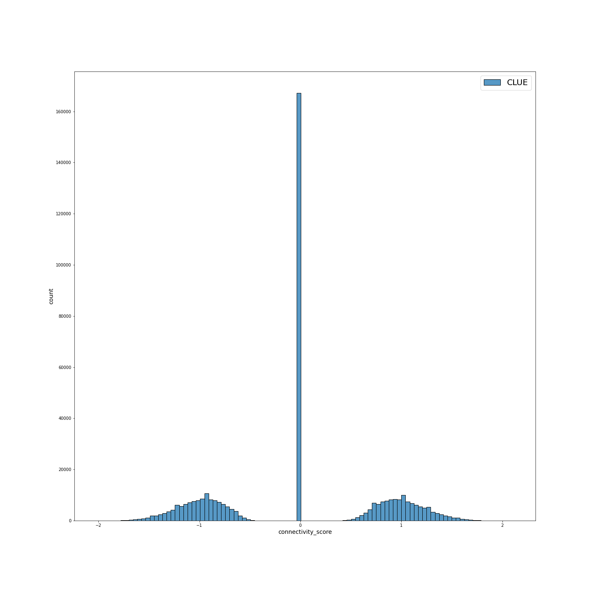
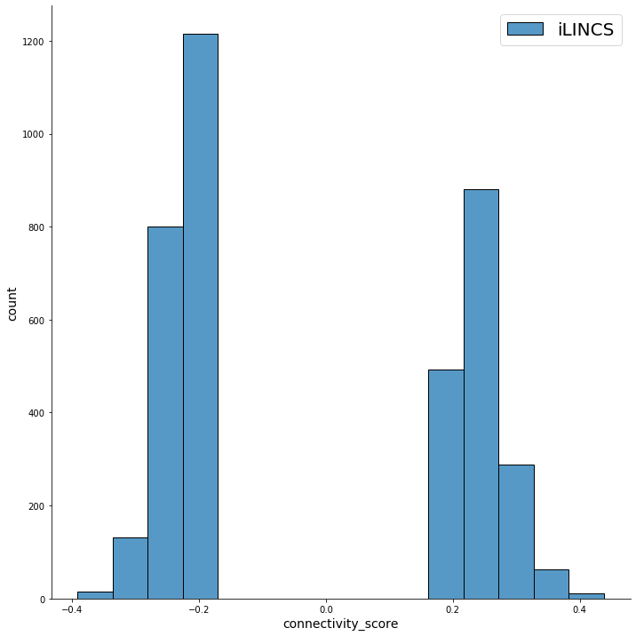
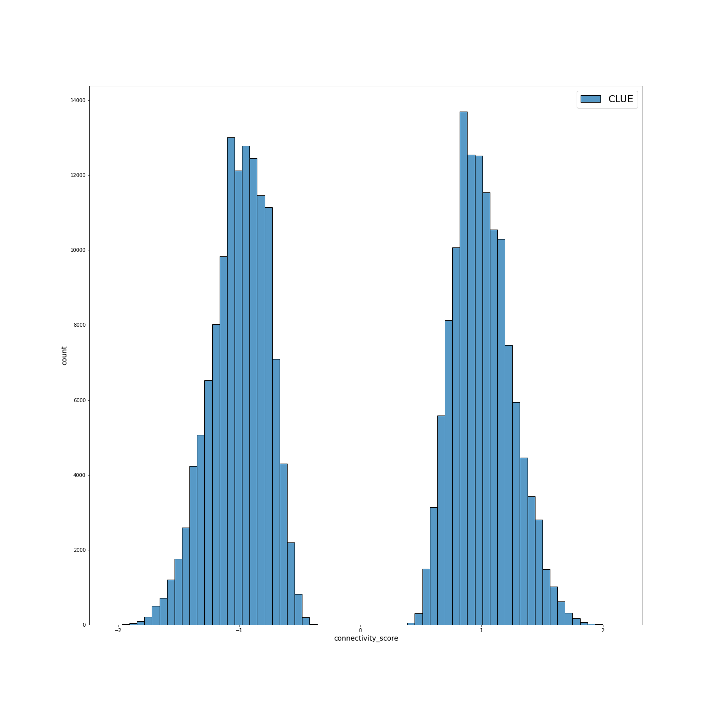
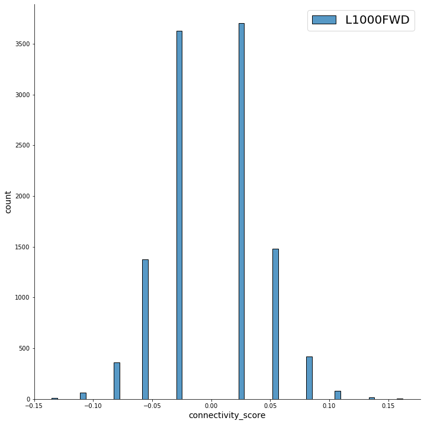
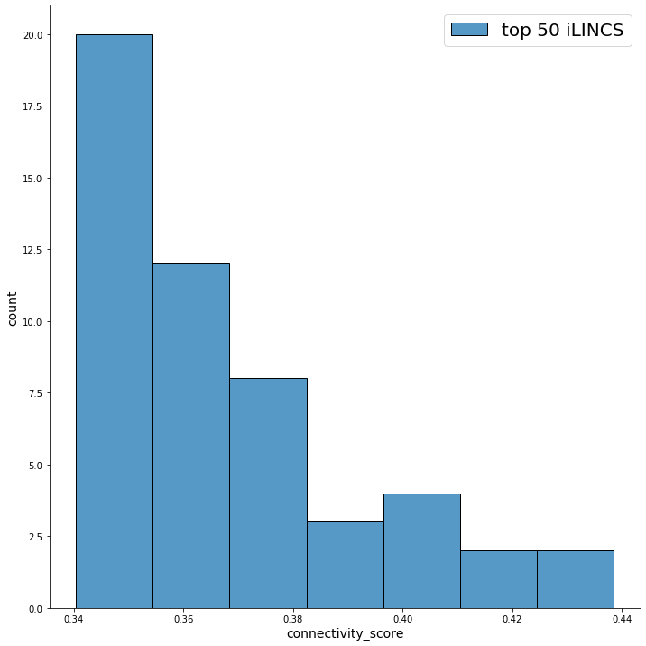
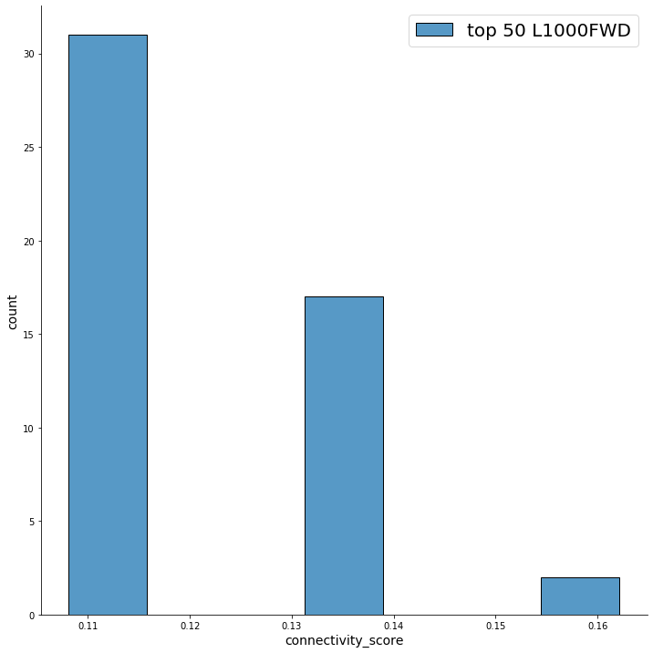
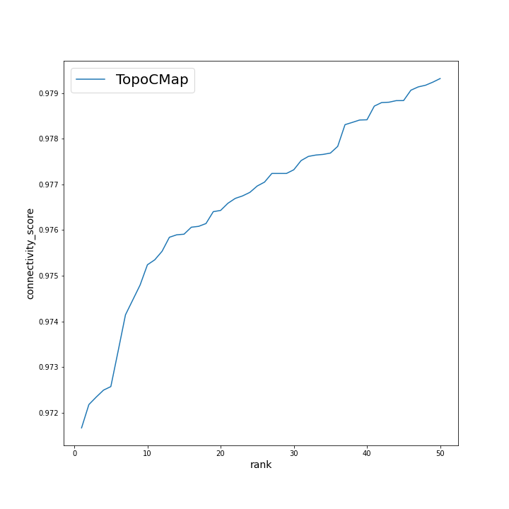

| a |  | b |  | c |  | d | |
Распределение значений connectivity score для: (a) TopoCMap; (b) CLUE; (c) iLINCS; (d) L1000FWD.
| a |  |
b |  | c | d |  |
Распределение значений connectivity score для CLUE после фильтрации неактивных соединений: (a) TopoCMap; (b) CLUE; (c) iLINCS; (d) L1000FWD.
| a |  |
b |  |
c |  | d |  |
Распределение значений connectivity score для top50: (a) TopoCMap; (b) CLUE; (c) iLINCS; (d) L1000FWD.
| a | |
b | |
c | |
d | |
Зависимость connectivity score от ранга сигнатуры для: (a) TopoCMap; (b) CLUE; (c) iLINCS; (d) L1000FWD.
| a |  | b | |
c | |
d | |
Зависимость connectivity score от ранга сигнатуры для top50 (a) TopoCMap; (b) CLUE; (c) iLINCS; (d) L1000FWD.